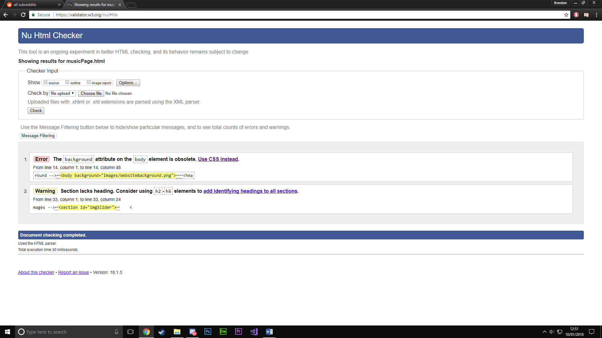

CMP1130M Web Authoring - Website Report
Web Standards
Web standards are guidelines set by W3C. While these standards do not need to be followed, following them will ensure websites will hold up and work in the future. Current web standards have evolved and improved over recent years. When you compare current standards to older, there are a large amount of advantages. These current standards allow for easy site development and maintenance that also allows use from mobile/tablet as well as desktop. Functionality across devices is achieved by using new functions given to the developer with HTML5 and CSS3. Good web standards in a website can improve how easy it is to find the site within search engines. Current web standards also have their disadvantages. Meeting these standards can be time consuming and requires developers to learn these new methods. You could also say that current standards may limit the creative freedom a developer has when creating a website and these standards are strict. It is best to follow these standards as the website is being developed rather than validating a site once it has been complete. Developers also need to ensure their website works on different browsers, which can be problematic and time consuming.
Best Practice to Meet Standards
The website uses many techniques such as local storage which is used to save the users canvas drawing, so they can later load it. It also uses CSS techniques to create shadows and rounded corners for a better-looking webpage. Another important feature of my website is the slider I created using JavaScript. This slider allows more information to be on the page without it being cluttered. The user clicks the arrows to slide through the bands albums.
Feedback
During the research stage of development, user feedback was given to and received from peers. This feedback gave new ideas, improvements, and an overall quality increase to the final website.
File Organisation & Markup
In the images below, you can see how the organisation of files was considered during the development of my website. HTML files are all in the same place, CSS, JavaScript, and Images have their own folder. The naming of files was also considered as good naming conventions are important when linking images and files to the website. You can see I used numbers to indicate the order of images and tags such as ‘tn’ to indicate that the image is a thumbnail for another. A good HTML and CSS markup structure is important. In the images below, you can see I have used indentation and spacing to make my markup neat and easy to read. Comments have also been used throughout the HTML, CSS, and JavaScript files to easily identify elements and what parts of code does. Using the best practices for JavaScript (W3schools.com JavaScript Best Practices) allowed for my JavaScript files to be better utilised for HTML and made it easier to interpret. These include practices like variable naming conventions, minimalizing the use of global variables, and keeping declarations on top. JQuery was also used to speed development up and make certain features easier to develop.
HTML5 & CSS3
Another way best practice applies to the website is with new HTML and CSS elements. New tags such as section, footer, and nav make website development much easier as it is easier to identify tags instead of just using the div tag, increasing readability and making CSS styling much easier. Tags such as nav and footer were useful for keeping the same page layout throughout the website.
Mobile Functionality and Interoperability
The images above show how the website adjusts itself when viewed on mobile. The desktop navigation menu disappears and is replaced with a menu specifically for mobile use. Images and text repositions itself accordingly to the devices screen size. Some website functions are removed when viewing on mobile as they are designed for desktop only. Below you can see an example of a media tag used which removes the filter from gallery images when the page is being viewed by a mobile.

Below you can see the websites Customiser working on many different browsers. It is important to ensure a website works on as many browsers as possible, so it caters to a vast audience instead of those that may just use Chrome or Firefox. Using each of the browsers shown below, each webpage was displayed correctly due to tests made during development of the site to ensure all features are compatible.
Chrome:
Edge
Internet Explorer
FireFox
W3C Validation
CSS:
Index:
About:
Shows:
Music:
Media:
Store:
Customiser:
Demo:
Validation Errors
Validation Errors: The purpose of the W3C Validator is to validate user websites using the W3C web standards, the site will tell you the errors and warnings in your HTML and CSS. Before validation changes were made to the site, errors were received such as repeated ID’s which were fixed by changing the object ID to a class since ID’s should be standalone objects. Also, errors such as HTML attributes being obsolete meaning they should be moved to CSS, and errors displaying that tags do not close is the right places, leaving some attributes lost. Some errors could not be fixed, mainly seen in the Store validation image, such as the data and field attributes not being allowed on certain elements. These errors could not be fixed because making changes to them would break functionality of the page so in these cases, the W3C validation is ignored. Another error spanning across all the pages is the ‘background’ attribute being obsolete. I have decided to ignore this error as my image will not work if I move it to CSS instead of the HTML. A warning also spans across most of the pages, this warning indicates that some sections do not have headings. I decided to ignore this warning as not every section needs a header. My CSS was also validated with the only errors being typo’s and obsolete text, simply fixed by reading the line that the error shows and removing unwanted text.
References
W3schools.com Javascript Best Practices: https://www.w3schools.com/js/js_best_practices.asp
Lightbox CSS: http://lokeshdhakar.com/projects/lightbox2/
JQuery: https://jquery.com/
Nav Font ‘VT323’: https://fonts.google.com/specimen/VT323?selection.family=VT323
Other Text Font ‘Dosis’: https://fonts.google.com/specimen/Dosis
Header Logo: https://www.lpassociation.com/forum/proxy.php?image=http%3A%2F%2Fmusicglue-wordpress-enter-shikari.s3.amazonaws.com%2Fwp-content%2Fuploads%2F2016%2F06%2Fes-red-logo.png&hash=96e8c4d976eac589f6db6dba8e6d85ee
Social Media Icons
Twitter: https://image.freepik.com/free-icon/twitter-logo_318-40459.jpg
Facebook: http://www.iconninja.com/files/424/88/63/facebook-black-icon.png
Spotify: http://www.iconninja.com/files/866/624/854/black-spotify-icon.png
Instagram: https://s3.amazonaws.com/freebiesupply/large/2x/instagram-icon-white-on-black.png
YouTube: https://seeklogo.com/images/Y/youtube-black-logo-B90F9C414C-seeklogo.com.png
Index.html
Enter Shikari Logo: https://ih1.redbubble.net/image.174824108.2566/flat,1000x1000,075,f.jpg
MediaPage.html
Gallery Images: https://www.facebook.com/pg/entershikari/photos/?ref=page_internal
Videos: https://www.youtube.com/watch?v=zSFSbZeShL0
https://www.youtube.com/watch?v=9ymjcSvEyhk
https://www.youtube.com/watch?v=EuvVOA8uvsc
MusicPage.html
Common Dreads Album: https://rustnbones.files.wordpress.com/2009/11/enter-shikari-common-dreads-album-cover.jpg
A Flash Flood of Colour Album: https://lastfm-img2.akamaized.net/i/u/ar0/49dedb85e60042d8b9f4a896d8b4cdf9
The Mindsweep Album: http://cdn3-www.musicfeeds.com.au/assets/uploads/67f4bb84d569cc37d15956e6a51ce7bd.jpg
The Spark Album: http://www.allthingsloud.com/wp-content/uploads/2017/09/enter_shikari_the_spark.jpg
Take to The Skies Album: https://i.pinimg.com/originals/1f/f6/cb/1ff6cb745f405257d68884498974bcfc.jpg
AboutPage.html
Band Member Images: https://www.facebook.com/pg/entershikari/photos/?ref=page_internal
Band Info: https://en.wikipedia.org/wiki/Enter_Shikari
StorePage.html
JEasyUI: http://www.jeasyui.com/demo/main/index.php?plugin=Draggable&theme=material&dir=ltr&pitem=&sort
Product Images: https://www.entershikari.com/store